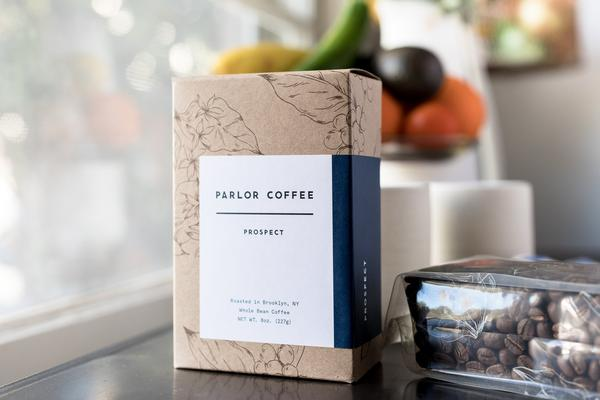

Our Coffee
The nuances that help define a great coffee are attributed to a complex chain of events that begins with the farmer and ends with the barista. We constantly sample coffees from different farmers, providing you with a carefully curated selection from the producers who share our passion for quality.
We partner with Parlor Coffee, our roaster in Brooklyn, to bring the best coffee that we can to the heart of New York. Our coffee is wicked good.

Prospect
Prospect carries the banner as Parlor’s signature blend. It’s distinctive floral and spiced notes are married to cocoa, grapefruit and marzipan in a sweet, bright expression.
-50% Ethiopia Sidamo
-50% Colombia San Sebastian
Wallabout
Wallabout is Parlor's most stalwart offering and showcases coffee’s more comforting elements. It shows flavors of milk chocolate, molasses and bittersweet cocoa.
-50% Colombia Frontera de Acevedo
-50% Peru Sandia Valley
colombia frontera de acevedo.
Frontera de Acevedo is one of Parlor's most approachable coffee offering and is currently served on drip. It offers a welcoming, full-bodied cup laden with refined cocoa and raw sugar.
colombia la serrania (decaf).
La Serrania is an exceptional decaf offering comprised of coffees produced and processed in Huila, Colombia. This coffee is decaffeinated with a technique unique to Colombia that uses ethyl acetate which derived from Colombian-grown sugar cane. The result is a sweet and round cup which presents red fruit, cocoa and guava.
Our Baked Goods
We also offer a daily assortment of fresh baked goods. Each morning we receive deliveries from some of our favorite bake shops around NYC such as: Ceci Cela, Oven.ly, and Underwest Donuts. Come by early for the largest selection!
Our Baristas
Our baristas are dedicated to their trade. With global experience and best-in-class tools, their practice is exacting. Drinks are expertly crafted to the highest standard, honoring the product and its origin.
LOCATIONS
100 Lexingtion Ave.
New York, NY 10016
(Entrance on 27th St.)
917-261-5962
274 Columbus Ave
New York, NY 10023
M - F : 7am - 7PM
Sat - Sun : 8am - 6PM
Follow Blackpress
©2018 BLACK PRESS COFFEE. ALL RIGHTS RESERVED.